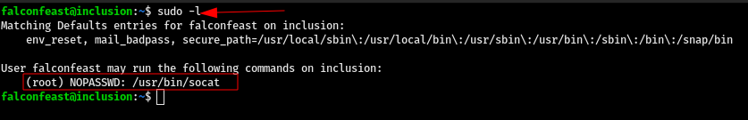

Inclusion - TryHackMe
Uploaded : Sept 06 2021
Hi guys, so today we are going to root a very easy machine from TryHackMe called Inclusion. This machine has a basic LFI (Local File Inclusion) vulnerability. So let's hunt the ROOT!.
Nmap Scan
As always we are going to start with nmap scan with default scripts, enumerate all versions and output all formats, here i am not using all ports flag because it will take lot of time and as per the difficulty of this machine,i will be not doing all ports scan.
So as show in the image above our scan is completed and we got 2 open ports first one is 22 which is ssh and second one is 80 on which some sort of website is running. Let's visit the websiite and lets see that what we can get.
Web Enumeration
After landing on the main page of the website i saw the 3 buttons and after click each one of them i got redirected to different pages but one thing was common which i noticed that all of the three pages were called with a php veriable named "?name=" so i tried to read the passwd file buy just going some directories back like normally we do in any linux os "/../../../../etc/passwd" and we can read that file which means this php code is vulnerable to local file inclusion (LFI).
User Flag
Now we know that this website is vulnerable to LFI, there are several ways to convert this LFI into RCE like poisoning apache logs, ssh logs, etc. But our hint:1 says "Try reading linux passwd file" so lets get back to our LFI and to get a better arrenged view i'll read the source code of the passwd file and as we can see in the image below we got the username which is "falconfeast" and his password "rootpassword", now we can login in into ssh with these creds.
But lets read the user flag using this LFI vulnerability soo just change the directory to/../../../../home/falconfeast/user.txt and we got the user flag GREAT!.
Root Flag
Let's login in into ssh with those creds.
Now we are into the target machine, so to get root access first lets see that which binary we can run as sudo without password.As show in the image below our user can run socat as a root user using sudo.
We can use'socat stdin exec:/bin/sh' command to break out from the restricted environment by spawning a root shell. I found this on GTFOBins.
and as we can see in the image below we got the root shell. Lets cat the root flage and we are DONE!
This machine was very easy and we learned basic LFI and a very basic privilege escalation..See you guys in the next hunt BYE! :D
@2021 Rushi0x04T7. Some rights reserved.